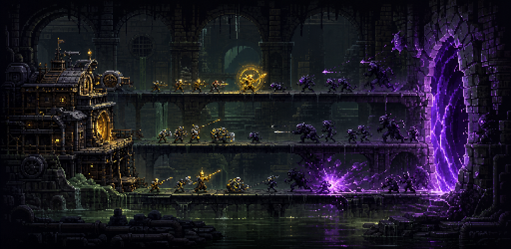
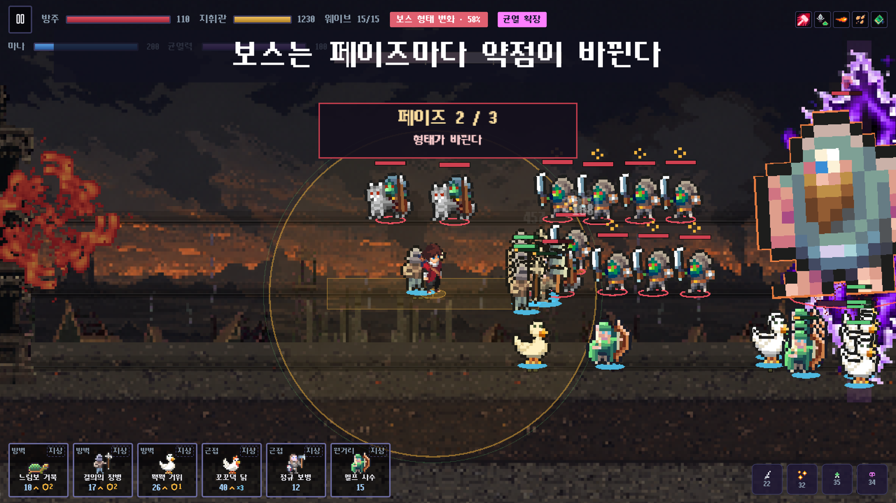

AI가 결정하지 않은 것
- 무료/유료와 광고 도입 여부
- 게임의 핵심 조작과 편성 중심 철학
- 밸런스 게이트 실패를 허용할지의 최종 판정
- 외부 에셋 사용 권한에 대한 오너 확인
- 스토어 제출·계정·법무 응답
사전 과제 제출물 04 · AI USAGE TECHNICAL DOCUMENT
생성 결과를 그대로 채택하지 않고,
데이터·테스트·실행 화면으로 검증하는 제작 파이프라인
문서 기준일 2026-08-08 · 버전 1.0
TOOLS & BOUNDARY
AI는 기획 정리, 코드 구현, 테스트 설계, 밸런스 분석, 이미지 제작 보조와 출시 문서 작성에 사용했습니다. 최종 규칙의 결정과 배포 승인 책임은 개발자에게 있으며, 게임 실행 중에는 LLM·이미지 생성 API를 호출하지 않습니다.
| 도구 | 주요 활용 | 저장소 근거 |
|---|---|---|
| Claude Code | 저장소 규칙 정리, 설계·기술 문서화, 구현 및 회귀 검토 | CLAUDE.mddocs/ |
| OpenAI Codex | 코드·테스트·자동화 도구 작성, 실제 게임 캡처 파이프라인, 제출 문서 제작 | docs/06-release/5254 · 57 |
| 내장 이미지 생성 도구 | 월드 배경 레이어, 방주·균열 구조물, 일부 타이틀·스토어 원화 초안 | FE/asset/generated/PRODUCTION-NOTES.md |
| 결정론적 로컬 도구 | 아틀라스 패킹, 아이콘·로고·UI 생성, 리사이즈, 알파 처리, 스크린샷 검사 | FE/tools/*.mjsFE/tools/*.ps1 |
PROMPT DESIGN
아래는 실제 작업 지시를 심사용으로 축약·정규화한 발췌입니다. 전문은
CLAUDE.md, docs/05-art-briefs/40,
docs/06-release/52·54에 남아 있습니다.
APPLICATION HISTORY
| 영역 | 활용 내용 | 대표 산출물·검증 |
|---|---|---|
| 기획·설계 | GDD, 핵심 루프, 데이터 스키마, 성능 예산과 위험 목록을 구조화하고 문서 간 충돌을 탐지 | docs/02-designdocs/03-tech |
| 코드 구현 | 전투 규칙, 화면, 상태 저장, 모바일 래퍼, i18n, 광고 어댑터와 빌드 도구 구현 보조 | FE/srcESLint · Vitest |
| 테스트·감사 | 화면 도달성, 데이터 참조, 접근성, 번역 누락, 프로덕션 전역, 해금 조건 검사기 작성 | FE/tools/check-*.mjsnpm run check |
| 밸런스 | 고정 시드 자동 전투, 경제 곡선, 난이도·편성 스윕과 CSV 리포트 작성 | balance*.mjsnpm run balance:check |
| 아트 제작 | 배경·구조물 원화를 생성하고 크로마키 제거, 픽셀 정규화, 알파·타일 경계 처리 | FE/asset/generatedPRODUCTION-NOTES.md |
| 스토어 자산 | 아이콘·로고 합성, 한국어·영어 실제 게임 스크린샷 캡처, 규격별 리사이즈와 검사 | FE/tools/*store*npm run store:check* |
| 출시 문서 | Play/App Store 제출 절차, 개인정보·광고 변경점, 재촬영 대장을 사실 기반으로 정리 | docs/06-release |
VALIDATION & LIMITS
| 검증 | 확인하는 것 | 대표 명령 |
|---|---|---|
| 정적 품질 | 문법·React 훅·미사용 코드·규칙 위반 | npm run lint |
| 행동 회귀 | 전투 순수 규칙, 저장·마이그레이션, 화면 로직 | npm run test |
| 데이터 무결성 | ID 참조, 소비처, 수치 범위, 크레딧 동기화 | npm run data:validate |
| 제품 완결성 | 화면 도달성·해금·접근성·한국어/영어 누락 | npm run check |
| 밸런스 | 고정 시드 승률·경제 여유·난이도·완주 가능성 | npm run balance:checknpm run playthrough |
| 스토어 이미지 | 실제 화면 여부, 픽셀 크기, sRGB, 알파, 용량, 금지 카피 | npm run store:checknpm run store:check:en |
밸런스·텍스트·출처를 JSON 한 곳에 두고 화면·시뮬레이터·문서 생성기가 같은 값을 읽습니다.
새 검사기는 금지 값이나 잘못된 카피를 일부러 넣어 실제로 실패하는지 확인한 뒤 원복합니다.
테스트가 통과해도 UI는 실제 뷰포트에서 열어 확인합니다. 스토어 화면은 AI 목업을 폐기하고 런타임 캡처로 교체했습니다.
실기기·스토어 콘솔처럼 로컬에서 확인할 수 없는 항목은 추정으로 숨기지 않고 출시 문서의 미결 목록에 남깁니다.
| 위험 | 대응 |
|---|---|
| 없는 기능을 그럴듯하게 추가 | FACTS 블록과 금지 목록을 프롬프트에 포함하고 코드·데이터에서 소비처를 확인합니다. |
| 문서와 코드가 시간차로 갈라짐 | 코드·데이터를 최종 권위로 두고 생성 문서와 검사기를 자동화합니다. |
| AI 이미지의 IP 유사성 | 특정 작품·캐릭터 모방을 금지하고 사람의 시각 검수 후 채택합니다. |
| 균형 조정의 과적합 | 다수 고정 시드와 여러 편성을 비교하고, 수치 게이트와 실제 플레이 판단을 분리합니다. |
| 자동 검사가 잡지 못하는 UX | 실제 브라우저·Android 기기에서 입력, 가독성, 시스템 바, 저장 복귀를 별도 검증합니다. |
ATTRIBUTION & OSS
FE/src/game/data/attributions.json이며,
npm run docs:attributions가 docs/legal/ATTRIBUTIONS.md를
생성합니다. 게임 안의 설정 → 라이선스 화면도 같은 데이터를 읽습니다.
| 분류 | 출처·원작자 | 권리·비고 |
|---|---|---|
| Dungeon Tileset | Szadi art | Public Domain |
| Bringer of Death | Clembod | 상업 사용·수정 허용 |
| Evil Wizard 2 | 동봉 라이선스 | CC0 |
| Samurai / Adventurer 픽셀아트 | 동봉 라이선스 | 상업 사용·수정 허용 |
| Main Character Free Pack | KBPixelArt | 상업 게임 사용 허용 |
| NightBorne / Necromancer | Diamond · CreativeKind / creativekind | 프로젝트 크레딧 기재 |
| Raven Fantasy Icons | Caio / Clockwork Raven Studios | 아이콘 2,192종 |
| Basic Asset Pack · Lively NPCs | 팩 이름으로 크레딧 | 크리처·NPC 스프라이트 |
| 물마루 모노 | Mushsooni © 2025 | 한글 픽셀 폰트 |
| 배경 음악 20곡 | Pixabay Audio · 개별 작가명은 ATTRIBUTIONS에 수록 | 게임 내 크레딧 기재 |
에셋·음원 출처 정본
FE/src/game/data/attributions.jsondocs/legal/ATTRIBUTIONS.md
라이선스 감사 기록
docs/01-research/04-license-audit.md
게임 내 설정 → 라이선스
본 표는 제출용 요약입니다. 곡별 작가와 에셋 팩별 상세 조건은 저장소의 전체 크레딧 문서를 기준으로 합니다. 새 에셋은 출처 데이터와 생성 문서를 같은 변경에서 갱신합니다.
OPEN SOURCE & AUDIT TRAIL
| 패키지 | 버전 | 라이선스 | 용도 |
|---|---|---|---|
| Phaser | 3.90.0 | MIT | 전투 렌더링·게임 루프 |
| React / React DOM | 19.2.x | MIT | 메타 화면·HUD |
| Zustand | 5.0.11 | MIT | 상태·저장 |
| Vite | 7.3.1 | MIT | 개발·웹 빌드 |
| Capacitor | 7.6.x | MIT | Android·iOS 래퍼 |
| React Router | 7.13.1 | MIT | 화면 라우팅 |
| Lucide React | 1.28.0 | ISC | UI 아이콘 |
| AdMob Community Plugin | 7.2.0 | MIT | 선택형 보상 광고 어댑터 |
| Sharp | 0.35.3 | Apache-2.0 | 이미지 합성·검사 |
| Vitest | 4.1.10 | MIT | 자동 테스트 |
AI 이미지 제작 기록
FE/asset/generated/PRODUCTION-NOTES.mddocs/05-art-briefs/40-image-production-brief.md
전체 외부 출처·라이선스
docs/legal/ATTRIBUTIONS.mddocs/01-research/04-license-audit.md

